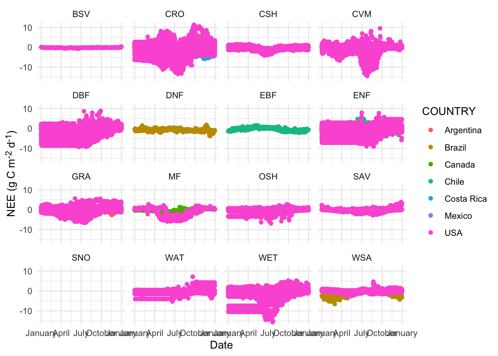
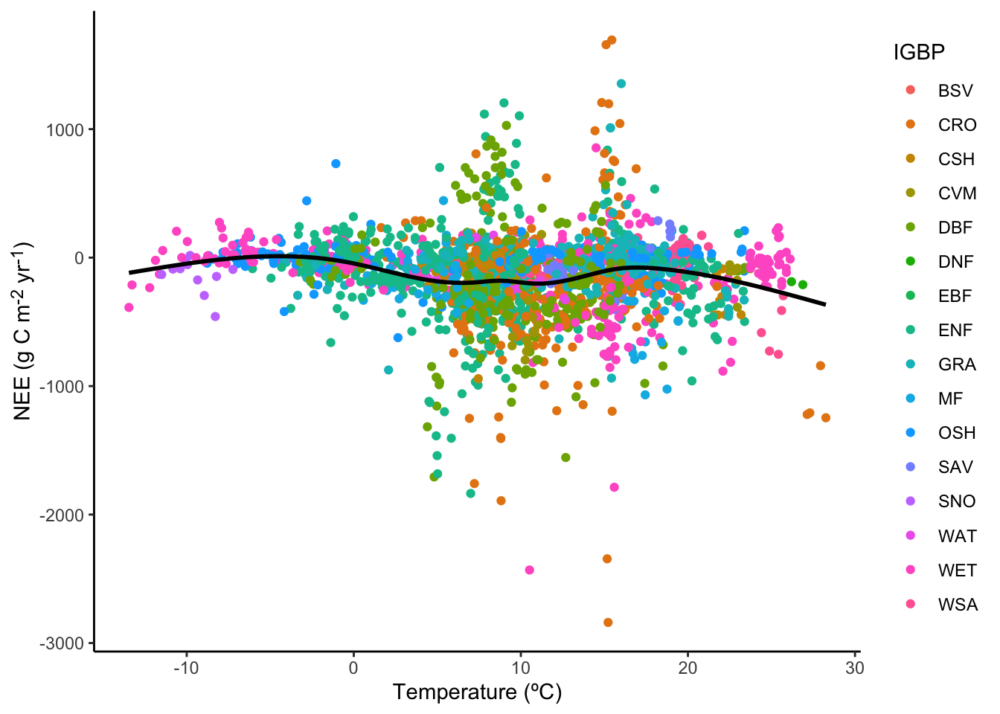
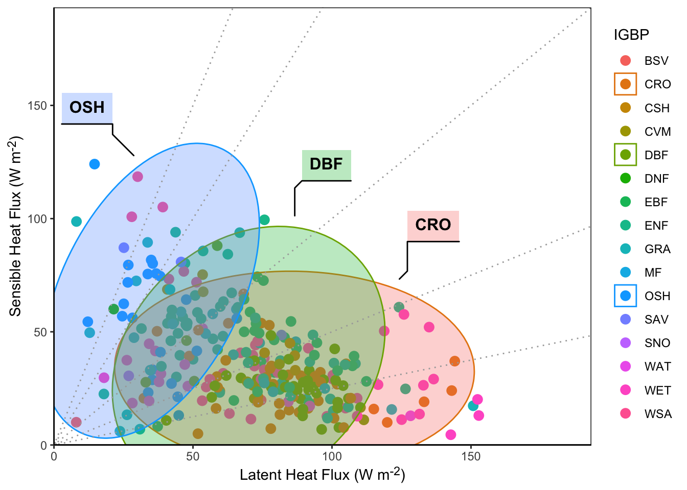

devtools::install_github("chuhousen/amerifluxr")
devtools::install_github("valentinitnelav/plotbiomes")Initial FLUXNET Plots
TODO list
- Data
- Download data for more sites
- Automated checking of data ranges?
- Plots
- Scale by number of years for each date
- Do all initial plots
- Change IGBP codes to definitions
- Add overall trend line to interannual met variability plots
- Facet all figures for interannual met variability
Data
Install libraries
These are not on CRAN so require downloading directly from their GitHub repos using devtools. This code chunk only needs to be run once (in a while) and it could take a while depending on if you choose to update all the dependencies.
Note
Need dev version of amerifluxr package to get amf_download_fluxnet function.
Read in libraries
library(dplyr)
library(lubridate)
library(ggplot2)
library(amerifluxr)
library(stringr)
library(readr)
library(purrr)
library(tidyr)
library(plotbiomes)
library(measurements)
library(ggnewscale)
library(fs)
#set default ggplot2 theme
theme_set(theme_classic())Download site metadata
Showing what metadata is available for a site
site_metadata <- amf_site_info()
site_metadata %>%
filter(SITE_ID == "US-SRM") SITE_ID SITE_NAME COUNTRY STATE IGBP TOWER_BEGAN TOWER_END
1 US-SRM Santa Rita Mesquite USA AZ WSA 2004 <NA>
URL_AMERIFLUX LOCATION_LAT LOCATION_LONG
1 https://ameriflux.lbl.gov/sites/siteinfo/US-SRM 31.8214 -110.8661
LOCATION_ELEV CLIMATE_KOEPPEN MAT MAP DATA_POLICY DATA_START DATA_END
1 1120 Bsk 17.92 380 CCBY4.0 2004 2024Do download setup
- Increase timeout because default of one minute isn’t enough
fs::dir_create("data")
options(timeout = 600)Download individual site data
Demonstrating how to use amf_download_fluxnet function
zip_path <- amf_download_fluxnet(
user_id = "Aariq",
user_email = "scottericr@gmail.com",
site_id = "US-xSR",
data_product = "FLUXNET",
data_variant = "FULLSET",
data_policy = "CCBY4.0",
agree_policy = TRUE,
intended_use = "synthesis",
intended_use_text = "creating pipeline for standardized figures",
out_dir = "data"
)
unzip(zip_path, exdir = fs::path_ext_remove(zip_path))Download multiple sites data
This is for all of the Arizona sites, which includes all the sites in Dave’s list. Gets list of sites that already have data downloaded (downloaded_sites). Then goes through each Arizona site and downloads the data if needed. If only BASE data is available, it returns the message Cannot find data from [site]. Downloads the zip file and unzips it.
az_sites <- site_metadata %>%
filter(STATE == "AZ")
downloaded_sites <- dir_ls("data", glob = "*.zip") %>%
str_split_i("_", 2)
sites <- az_sites$SITE_ID[!az_sites$SITE_ID %in% downloaded_sites]
# This will error because some sites don't have data
zip_paths <- amf_download_fluxnet(
user_id = "Aariq",
user_email = "scottericr@gmail.com",
site_id = sites,
data_product = "FLUXNET",
data_variant = "FULLSET",
data_policy = "CCBY4.0",
agree_policy = TRUE,
intended_use = "synthesis",
intended_use_text = "creating pipeline for standardized figures",
out_dir = "data/"
)
walk(zip_paths, function(zip_path) {
unzipped_path <- fs::path_ext_remove(zip_path)
unzip(zip_path, exdir = unzipped_path)
})Read in data
Single site details
- Site: US-SRM (Santa Rita Mesquite)
- Years: 2004 - 2023
- IGBP: Woody Savannas
single_site_daily <- read_csv(
"data/AMF_US-SRM_FLUXNET_FULLSET_2004-2023_3-6/AMF_US-SRM_FLUXNET_FULLSET_DD_2004-2023_3-6.csv"
) |>
mutate(
across(where(is.numeric), \(x) if_else(x < -9000, NA, x)),
date = ymd(TIMESTAMP),
.before = TIMESTAMP
)Rows: 7305 Columns: 356
── Column specification ────────────────────────────────────────────────────────
Delimiter: ","
dbl (356): TIMESTAMP, TA_F_MDS, TA_F_MDS_QC, TA_F_MDS_NIGHT, TA_F_MDS_NIGHT_...
ℹ Use `spec()` to retrieve the full column specification for this data.
ℹ Specify the column types or set `show_col_types = FALSE` to quiet this message.single_site_hourly <- read_csv(
"data/AMF_US-SRM_FLUXNET_FULLSET_2004-2023_3-6/AMF_US-SRM_FLUXNET_FULLSET_HH_2004-2023_3-6.csv"
) |>
mutate(
across(where(is.numeric), \(x) if_else(x < -9000, NA, x)),
datetime_start = ymd_hm(TIMESTAMP_START),
datetime_end = ymd_hm(TIMESTAMP_END),
.before = TIMESTAMP_START
)Rows: 350640 Columns: 253
── Column specification ────────────────────────────────────────────────────────
Delimiter: ","
dbl (253): TIMESTAMP_START, TIMESTAMP_END, TA_F_MDS, TA_F_MDS_QC, TA_ERA, TA...
ℹ Use `spec()` to retrieve the full column specification for this data.
ℹ Specify the column types or set `show_col_types = FALSE` to quiet this message.single_site_annually <- read_csv(
"data/AMF_US-SRM_FLUXNET_FULLSET_2004-2023_3-6/AMF_US-SRM_FLUXNET_FULLSET_YY_2004-2023_3-6.csv"
) |>
mutate(across(where(is.numeric), \(x) if_else(x < -9000, NA, x)))Rows: 20 Columns: 347
── Column specification ────────────────────────────────────────────────────────
Delimiter: ","
dbl (347): TIMESTAMP, TA_F_MDS, TA_F_MDS_QC, TA_F_MDS_NIGHT, TA_F_MDS_NIGHT_...
ℹ Use `spec()` to retrieve the full column specification for this data.
ℹ Specify the column types or set `show_col_types = FALSE` to quiet this message.Multiple sites
They used many different variants of -9999 to represent null values.
daily_sites_paths <- dir_ls(
"data",
regexp = "FLUXNET_FULLSET_DD",
recurse = TRUE
)
# read_csv(daily_sites_paths) doesn't work because the CSVs have different
# numbers of columns
multiple_sites_daily <- map(
daily_sites_paths,
function(.x) {
read_csv(.x) %>% mutate(file = path_file(.x))
}
) %>%
list_rbind() |>
mutate(site = str_split_i(file, "_", 2), .keep = "unused", .before = 1)
annual_sites_paths <- dir_ls(
"data",
regexp = "FLUXNET_FULLSET_YY",
recurse = TRUE
)
multiple_sites_annual <- map(
annual_sites_paths,
function(.x) {
read_csv(.x) %>% mutate(file = basename(.x), .before = 1)
}
) %>%
list_rbind() |>
mutate(site = str_split_i(file, "_", 2), .keep = "unused", .before = 1)Change null values to NA
Null values in FLUXNET are indicated by some variation of -9999 (-9999.x, where x can be multiple values of 0 or 9). See Missing data section on Data Variables page. Returning datasets for daily and annual data that contain these NA values and then remove them from the datasets.
# Replace all numeric values < -9000 with NA
multiple_sites_annual <- multiple_sites_annual |>
mutate(across(where(is.numeric), function(x) if_else(x < -9000, NA, x)))
multiple_sites_daily <- multiple_sites_daily |>
mutate(across(where(is.numeric), function(x) if_else(x < -9000, NA, x)))The 12 sites currently in the report are: US-Fmf, US-Fuf, US-Fwf, US-LS2, US-MtB, US-SRC, US-SRG, US-SRM, US-SRS, US-Whs, US-Wkg, US-xSR
Other wrangling
# multiple_sites_annual <- multiple_sites_annual |>
# mutate(date = ymd(TIMESTAMP), .before = TIMESTAMP)
multiple_sites_daily <- multiple_sites_daily |>
mutate(date = ymd(TIMESTAMP), .before = TIMESTAMP)Figures
Find all variables described on the FULLSET Data Product page. Plots are generally of 3 variables:
- GPP_NT_VUT_REF
- RECO_NT_VUT_REF
- NEE_VUT_REF
Entire time series (single site)
Lots of ways to smooth time series (i.e., filter)
- Simple running mean from this book chapter
- Takes mean of value and (n-1) / 2 values on either side of it
- Bigger window size = more averaging
window_size <- 51Code
total_ts_gpp <- single_site_daily %>%
mutate(
running_mean_gpp = stats::filter(
GPP_NT_VUT_REF,
rep(1 / window_size, window_size)
)
)
yr_start_dates <- total_ts_gpp %>%
select(date) %>%
filter(grepl("-01-01", date)) %>%
pull()
ggplot(total_ts_gpp, aes(x = date, y = GPP_NT_VUT_REF)) +
geom_point(size = 0.5, color = "darkgrey") +
geom_line(aes(y = running_mean_gpp), color = "blue", lwd = 1) +
geom_vline(xintercept = yr_start_dates, color = "grey", alpha = 0.5) +
labs(x = "Date", y = "GPP (smoothed)")
Code
total_ts_reco <- single_site_daily %>%
mutate(
running_mean_reco = stats::filter(
RECO_NT_VUT_REF,
rep(1 / window_size, window_size)
)
)
ggplot(total_ts_reco, aes(x = date, y = RECO_NT_VUT_REF)) +
geom_point(size = 0.5, color = "darkgrey") +
geom_line(aes(y = running_mean_reco), color = "blue", lwd = 1) +
geom_vline(xintercept = yr_start_dates, color = "grey", alpha = 0.5) +
labs(x = "Date", y = "RECO (smoothed)")
Code
total_ts_nee <- single_site_daily %>%
mutate(
running_mean_nee = stats::filter(
NEE_VUT_REF,
rep(1 / window_size, window_size)
)
)
ggplot(total_ts_nee, aes(x = date, y = NEE_VUT_REF)) +
geom_point(size = 0.5, color = "darkgrey") +
geom_line(aes(y = running_mean_nee), color = "blue", lwd = 1) +
geom_vline(xintercept = yr_start_dates, color = "grey", alpha = 0.5) +
labs(x = "Date", y = "NEE (smoothed)")
Entire time series (multiple sites)
Same smoother as used for single site.
total_ts_ms <- multiple_sites_daily %>%
left_join(site_metadata, by = c("site" = "SITE_ID")) %>%
group_by(site) %>%
mutate(
running_mean_gpp = stats::filter(
GPP_NT_VUT_REF,
rep(1 / window_size, window_size)
),
running_mean_reco = stats::filter(
RECO_NT_VUT_REF,
rep(1 / window_size, window_size)
),
running_mean_nee = stats::filter(
NEE_VUT_REF,
rep(1 / window_size, window_size)
)
)
yr_start_dates_ms <- total_ts_ms %>%
filter(grepl("-01-01", date)) %>%
pull(date)Show entire time series of GPP for all sites, with points for daily values.
Code
ggplot(
total_ts_ms,
aes(x = date, y = GPP_NT_VUT_REF, color = site, fill = site)
) +
geom_point(size = 0.1, alpha = 0.1, key_glyph = draw_key_rect) +
geom_vline(xintercept = yr_start_dates_ms, color = "grey", alpha = 0.5) +
geom_hline(yintercept = 0, color = "grey", alpha = 0.5, linetype = "dashed") +
facet_grid(vars(IGBP)) +
guides(colour = guide_legend(override.aes = list(alpha = 1))) +
labs(x = "Date", y = "GPP") +
theme(panel.background = element_rect(color = "black"))
Code
ggplot(
total_ts_ms,
aes(x = date, y = RECO_NT_VUT_REF, color = site, fill = site)
) +
geom_point(size = 0.1, alpha = 0.1, key_glyph = draw_key_rect) +
geom_vline(xintercept = yr_start_dates_ms, color = "grey", alpha = 0.5) +
geom_hline(yintercept = 0, color = "grey", alpha = 0.5, linetype = "dashed") +
facet_grid(vars(IGBP)) +
guides(colour = guide_legend(override.aes = list(alpha = 1))) +
labs(x = "Date", y = "RECO") +
theme(panel.background = element_rect(color = "black"))Code
ggplot(
total_ts_ms,
aes(x = date, y = NEE_VUT_REF, color = site, fill = site)
) +
geom_point(size = 0.1, alpha = 0.1, key_glyph = draw_key_rect) +
geom_vline(xintercept = yr_start_dates_ms, color = "grey", alpha = 0.5) +
geom_hline(yintercept = 0, color = "grey", alpha = 0.5, linetype = "dashed") +
facet_grid(vars(IGBP)) +
guides(colour = guide_legend(override.aes = list(alpha = 1))) +
labs(x = "Date", y = "NEE") +
theme(panel.background = element_rect(color = "black"))
Show entire time series of GPP for all sites, with daily values smoothed out as a line.
Code
ggplot(total_ts_ms, aes(x = date, y = running_mean_gpp, color = site)) +
geom_line(lwd = 0.5, alpha = 0.7) +
geom_vline(xintercept = yr_start_dates_ms, color = "grey", alpha = 0.5) +
geom_hline(yintercept = 0, color = "grey", alpha = 0.5, linetype = "dashed") +
facet_grid(vars(IGBP)) +
labs(x = "Date", y = "GPP (smoothed)") +
theme(panel.background = element_rect(color = "black"))
Code
ggplot(total_ts_ms, aes(x = date, y = running_mean_reco, color = site)) +
geom_line(lwd = 0.5, alpha = 0.7) +
geom_vline(xintercept = yr_start_dates_ms, color = "grey", alpha = 0.5) +
geom_hline(yintercept = 0, color = "grey", alpha = 0.5, linetype = "dashed") +
facet_grid(vars(IGBP)) +
labs(x = "Date", y = "RECO (smoothed)") +
theme(panel.background = element_rect(color = "black"))Code
ggplot(total_ts_ms, aes(x = date, y = running_mean_nee, color = site)) +
geom_line(lwd = 0.5, alpha = 0.7) +
geom_vline(xintercept = yr_start_dates_ms, color = "grey", alpha = 0.5) +
geom_hline(yintercept = 0, color = "grey", alpha = 0.5, linetype = "dashed") +
facet_grid(vars(IGBP)) +
labs(x = "Date", y = "NEE (smoothed)") +
theme(panel.background = element_rect(color = "black"))Average annual time series (single site)
Show average daily values (with standard deviations)
Code
# get averages by date across years
gpp_by_date <- single_site_daily %>%
mutate(date_minus_year = format(date, '%m-%d')) %>%
group_by(date_minus_year) %>%
summarize(gpp_mean = mean(GPP_NT_VUT_REF), gpp_sd = sd(GPP_NT_VUT_REF)) %>%
mutate(date_fake_year = ymd(paste0("2024-", date_minus_year)))
ggplot(gpp_by_date, aes(x = date_fake_year, y = gpp_mean)) +
geom_ribbon(
aes(ymax = gpp_mean + gpp_sd, ymin = gpp_mean - gpp_sd),
fill = "grey"
) +
geom_point() +
labs(x = "Date", y = "Mean GPP +/- SD") +
theme_minimal() +
scale_x_date(date_labels = "%B")Code
reco_by_date <- single_site_daily %>%
mutate(date_minus_year = format(date, '%m-%d')) %>%
group_by(date_minus_year) %>%
summarize(
reco_mean = mean(RECO_NT_VUT_REF),
reco_sd = sd(RECO_NT_VUT_REF)
) %>%
mutate(date_fake_year = ymd(paste0("2024-", date_minus_year)))
ggplot(reco_by_date, aes(x = date_fake_year, y = reco_mean)) +
geom_ribbon(
aes(ymax = reco_mean + reco_sd, ymin = reco_mean - reco_sd),
fill = "grey"
) +
geom_point() +
labs(x = "Date", y = "Mean RECO +/- SD") +
theme_minimal() +
scale_x_date(date_labels = "%B")
Code
nee_by_date <- single_site_daily %>%
mutate(date_minus_year = format(date, '%m-%d')) %>%
group_by(date_minus_year) %>%
summarize(nee_mean = mean(NEE_VUT_REF), nee_sd = sd(NEE_VUT_REF)) %>%
mutate(date_fake_year = ymd(paste0("2024-", date_minus_year)))
ggplot(nee_by_date, aes(x = date_fake_year, y = nee_mean)) +
geom_ribbon(
aes(ymax = nee_mean + nee_sd, ymin = nee_mean - nee_sd),
fill = "grey"
) +
geom_point() +
labs(x = "Date", y = "Mean NEE +/- SD") +
theme_minimal() +
scale_x_date(date_labels = "%B")Average annual time series (multiple sites)
Textbook figures:

Show average daily values by site (symbols) and vegetation type (colors)
Code
gpp_by_date_sites <- multiple_sites_daily %>%
mutate(date_minus_year = format(date, '%m-%d')) %>%
group_by(site, date_minus_year) %>%
summarize(
gpp_mean = mean(GPP_NT_VUT_REF),
gpp_sd = sd(GPP_NT_VUT_REF),
reco_mean = mean(RECO_NT_VUT_REF),
reco_sd = sd(RECO_NT_VUT_REF),
nee_mean = mean(NEE_VUT_REF),
nee_sd = sd(NEE_VUT_REF)
) %>%
mutate(date_fake_year = ymd(paste0("2024-", date_minus_year))) %>%
left_join(site_metadata, by = c("site" = "SITE_ID"))
ggplot(gpp_by_date_sites, aes(x = date_fake_year, y = gpp_mean)) +
geom_point(aes(color = IGBP, shape = site)) +
labs(x = "Date", y = "Mean GPP") +
theme_minimal() +
scale_x_date(date_labels = "%B") +
scale_shape_manual(values = 1:length(unique(gpp_by_date_sites$site)))
Code
ggplot(gpp_by_date_sites, aes(x = date_fake_year, y = reco_mean)) +
geom_point(aes(color = IGBP, shape = site)) +
labs(x = "Date", y = "Mean RECO") +
theme_minimal() +
scale_x_date(date_labels = "%B") +
scale_shape_manual(values = 1:length(unique(gpp_by_date_sites$site)))Code
ggplot(gpp_by_date_sites, aes(x = date_fake_year, y = nee_mean)) +
geom_point(aes(color = IGBP, shape = site)) +
labs(x = "Date", y = "Mean NEE") +
theme_minimal() +
scale_x_date(date_labels = "%B") +
scale_shape_manual(values = 1:length(unique(gpp_by_date_sites$site)))Comparison to meteorological variables (multiple sites)
Textbook figure (for NEE):
Meteorological variables (bold indicates variable in figures):
- P: Precipitation - not in annual datasets
- P_ERA: Precipitation, downscaled from ERA, linearly regressed using measured only site data
- P_F: Precipitation consolidated from P and P_ERA
- TA_F_MDS: Air temperature, gapfilled using MDS method
- TA_ERA: Air temperature, downscaled from ERA, linearly regressed using measured only site data
- TA_F: Air temperature, consolidated from TA_F_MDS and TA_ERA
Show annual precipitation, summed from daily data, against three main variables annually.
Code
ggplot(multiple_sites_annual, aes(x = P_F, y = GPP_NT_VUT_REF)) +
geom_smooth(se = FALSE, color = "black") +
geom_point(aes(color = site)) +
labs(x = "Precipitation (mm y-1)", y = "Annual GPP") +
theme_minimal()
Code
ggplot(multiple_sites_annual, aes(x = P_F, y = RECO_NT_VUT_REF)) +
geom_smooth(se = FALSE, color = "black") +
geom_point(aes(color = site)) +
labs(x = "Precipitation (mm y-1)", y = "Annual RECO") +
theme_minimal()Code
ggplot(multiple_sites_annual, aes(x = P_F, y = NEE_VUT_REF)) +
geom_smooth(se = FALSE, color = "black") +
geom_point(aes(color = site)) +
labs(x = "Precipitation (mm y-1)", y = "Annual NEE") +
theme_minimal()Show annual temperature, averaged from daily data, against three main variables annually.
Code
ggplot(multiple_sites_annual, aes(x = TA_F, y = GPP_NT_VUT_REF)) +
geom_smooth(se = FALSE, color = "black") +
geom_point(aes(color = site)) +
labs(x = "Temperature (C)", y = "Annual GPP") +
theme_minimal()Code
ggplot(multiple_sites_annual, aes(x = TA_F, y = RECO_NT_VUT_REF)) +
geom_smooth(se = FALSE, color = "black") +
geom_point(aes(color = site)) +
labs(x = "Temperature (C)", y = "Annual RECO") +
theme_minimal()Code
ggplot(multiple_sites_annual, aes(x = TA_F, y = NEE_VUT_REF)) +
geom_smooth(se = FALSE, color = "black") +
geom_point(aes(color = site)) +
labs(x = "Temperature (C)", y = "Annual NEE") +
theme_minimal()
Questions
- We want to do this for evapotranspiration; which variable is that in the dataset?
- Do precipitation variable P and temp variable TA_F_MDS come from measured site data?
- We could get some measure of variability for x- (temp and precip) and y- (GPP, RECO, NEE) axes by using the daily or monthly values instead; would that be of interest?
Interannual comparison to meteorological variables (multiple sites)
Textbook figure (for NPP):
Organize data to get min and max annual values for two meteorological and three product variables. Then further reorganize data to get all plots into single figure.
interannual_met <- multiple_sites_annual %>%
group_by(site) %>%
summarize(
min_precip = min(P_F),
max_precip = max(P_F),
min_temp = min(TA_F),
max_temp = max(TA_F),
min_gpp = min(GPP_NT_VUT_REF),
max_gpp = max(GPP_NT_VUT_REF),
min_reco = min(RECO_NT_VUT_REF),
max_reco = max(RECO_NT_VUT_REF),
min_nee = min(NEE_VUT_REF),
max_nee = max(NEE_VUT_REF)
) %>%
pivot_longer(
cols = -site,
names_to = c("min_or_max", ".value"),
names_sep = "_"
)
interannual_met_pairs <- interannual_met %>%
mutate(
precip2 = precip,
precip3 = precip,
temp2 = temp,
temp3 = temp,
gpp2 = gpp,
reco2 = reco,
nee2 = nee
) %>%
rename(
precipgpp_mvvalue = precip,
precipgpp_pvvalue = gpp,
preciprec_mvvalue = precip2,
preciprec_pvvalue = reco,
precipnee_mvvalue = precip3,
precipnee_pvvalue = nee,
tempergpp_mvvalue = temp,
tempergpp_pvvalue = gpp2,
temperrec_mvvalue = temp2,
temperrec_pvvalue = reco2,
tempernee_mvvalue = temp3,
tempernee_pvvalue = nee2
) %>%
pivot_longer(
!c(site, min_or_max),
names_to = c("pairs", ".value"),
names_sep = "_"
) %>%
separate_wider_position(pairs, widths = c(met_var = 6, pro_var = 3)) %>%
rename(mv_value = mvvalue, pv_value = pvvalue) %>%
mutate(
met_var = as.factor(met_var),
met_label = factor(
met_var,
labels = c("Precipitation (mm y-1)", "Temperature (C)")
),
pro_var = factor(pro_var, labels = c("gpp", "rec", "nee")),
pro_label = factor(
pro_var,
labels = c("Annual GPP", "Annual RECO", "Annual NEE")
)
)Show minimum and maximum interannual precipitation/temperature compared to min and max interannual GPP/RECO/NEE.
Code
ggplot(
interannual_met_pairs,
aes(x = mv_value, y = pv_value, group = site, color = site)
) +
geom_point() +
geom_line() +
facet_grid(rows = vars(pro_label), cols = vars(met_label), scales = "free") +
theme_bw() +
labs(x = "", y = "")
Question
- These figures match up the lowest annual meteorological variable with the lowest product variable for each site, with the highest. Is that what the textbook figure is displaying?
- There is no trend line because there doesn’t really seem to be a trend here. One might emerge once we add more sites?
ERIC: I thought it was just like this
ggplot(multiple_sites_annual, aes(x = TA_F, y = NEE_VUT_REF)) +
geom_smooth(se = FALSE, color = "black") +
geom_smooth(se = FALSE, aes(color = site), method = "lm") +
# geom_point(aes(color = site)) +
labs(x = "Temperature (C)", y = "Annual NEE") +
theme_minimal()`geom_smooth()` using method = 'loess' and formula = 'y ~ x'
`geom_smooth()` using formula = 'y ~ x'Bowen ratios
Textbook figure:

Heat flux variables (bold indicates variable in figures):
- H_F_MDS: Sensible heat flux, gapfilled using MDS method (W m-2)
- H_CORR (H_CORR_25, H_CORR_75): Sensible heat flux, corrected H_F_MDS by energy balance closure correction factor (25th and 75th percentile)
- LE_F_MDS: Latent heat flux, gapfilled using MDS method
- LE_CORR (LE_CORR_25, LE_CORR_75): Latent heat flux, corrected LE_F_MDS by energy balance closure correction factor (25th and 75th percentile)
Visual check of heat flux variable ranges.
ggplot(multiple_sites_daily, aes(x = LE_F_MDS)) +
geom_histogram() +
facet_wrap(~site) +
theme_bw()ggplot(multiple_sites_daily, aes(x = H_F_MDS)) +
geom_histogram() +
facet_wrap(~site) +
theme_bw()Show average daily summer-only sensible vs latent heat flux (i.e., Bowen ratio) for multiple sites with different vegetation types. Bowen ratios of 3, 2, 1, 0.5, and 0.25 shown by dotted lines.
Code
multiple_sites_flux <- multiple_sites_daily %>%
filter(month(date) %in% c(6:8)) %>% #filter to include summer only
group_by(site) %>%
summarize(
latent_heat_flux = mean(LE_F_MDS),
sensible_heat_flux = mean(H_F_MDS)
) %>%
left_join(site_metadata, by = c("site" = "SITE_ID"))
upper_axis_limit <- pmax(
max(multiple_sites_flux$sensible_heat_flux),
max(multiple_sites_flux$latent_heat_flux)
) +
10
ggplot(
multiple_sites_flux,
aes(x = latent_heat_flux, y = sensible_heat_flux, color = IGBP)
) +
geom_point(size = 3) +
geom_abline(
slope = c(0.25, 0.5, 1, 2, 3),
linetype = "dotted",
color = "darkgrey"
) +
labs(x = "Latent Heat Flux (W m-2)", y = "Sensible Heat Flux (W m-2)") +
guides(x.sec = "axis", y.sec = "axis") +
theme(
axis.ticks.x.top = element_blank(),
axis.text.x.top = element_blank(),
axis.ticks.y.right = element_blank(),
axis.text.y.right = element_blank()
) +
scale_x_continuous(expand = c(0, 0), limits = c(0, upper_axis_limit)) +
scale_y_continuous(expand = c(0, 0), limits = c(0, upper_axis_limit))
Questions
- Should watts be converted to megajoules for the heat flux variables? No, people will be more likely to expect Wm-2
- Are heat flux values expected to be negative, especially for sensible heat flux?
Biome plot
Textbook figure:
The R package plotbiomes can be used to recreate the base plot here, which is referred to as a Whittaker plot. It includes a dataset of temperature, precipitation, and associated biome.
data("Whittaker_biomes")
head(Whittaker_biomes) temp_c precp_cm biome_id biome
1 -10.21600 1.607134 6 Tundra
1.1 -10.62857 1.696938 6 Tundra
1.2 -11.14116 1.846052 6 Tundra
1.3 -11.61776 2.028094 6 Tundra
1.4 -12.05961 2.242129 6 Tundra
1.5 -12.46799 2.486286 6 Tundraunique(Whittaker_biomes$biome)[1] "Tundra" "Boreal forest"
[3] "Temperate grassland/desert" "Woodland/shrubland"
[5] "Temperate seasonal forest" "Temperate rain forest"
[7] "Tropical rain forest" "Tropical seasonal forest/savanna"
[9] "Subtropical desert" Get mean values of annual precipitation (P_F) and temperature (TA_F) for each site, and convert precipitation to match Whittaker dataset units (mm/yr to cm/yr).
whittaker_format <- multiple_sites_annual %>%
group_by(site) %>%
summarize(mean_precip = mean(P_F), mean_temp = mean(TA_F)) %>%
mutate(mean_precip_cm = conv_unit(mean_precip, "mm", "cm")) %>%
left_join(site_metadata, by = c("site" = "SITE_ID"))Show mean annual precipitation and temperature of each site over Whittaker biome.
Code
ggplot() +
geom_polygon(
data = Whittaker_biomes,
aes(x = temp_c, y = precp_cm, fill = biome),
# fill = "white"
alpha = 0.4
) +
# scale_fill_brewer(palette = "BrBG") +
scale_fill_manual(
name = "Whittaker biomes",
breaks = names(Ricklefs_colors),
labels = names(Ricklefs_colors),
values = Ricklefs_colors
) +
# new_scale_color() +
geom_point(
data = whittaker_format,
aes(x = mean_temp, y = mean_precip_cm, color = IGBP)
) +
scale_color_brewer(palette = "Set1") +
labs(x = "Temperature (C)", y = "Precipitation (cm y-1)")
Questions
- What to do with the plot colors? We could match IGBP colors to biome colors. Or make the biome colors represent their type, e.g., tan for desert, green for rain forest. Or turn the biome types into labels like the original figure. Lots of options here…
Daily energy flux (single site)
Textbook figure:
The energy flux variables are listed below. The ones that have multiple possible options are discussed below in the questions section.
- NETRAD: Net radiation
- SW_IN_F: Shortwave radiation, incoming consolidated from SW_IN_F_MDS and SW_IN_ERA (negative values set to zero)
- SW_OUT: Shortwave radiation, outgoing
- LW_IN_F: Longwave radiation, incoming, consolidated from LW_IN_F_MDS and LW_IN_ERA
- LW_OUT: Longwave radiation, outgoing
Parsing dates and times:
rad_dt <- single_site_hourly %>%
mutate(
date = date(datetime_start),
time = format(as.POSIXct(datetime_start), format = '%H:%M')
)Show average half-hourly shortwave, longwave, and total radiation for a single site. Data collection starts 2004-01-01 and ends 2023-12-31.
Code
rad_means <- rad_dt %>%
group_by(time) %>%
summarise(
rn_mean = mean(NETRAD),
sw_in_mean = mean(SW_IN_F),
sw_out_mean = mean(SW_OUT),
lw_in_mean = mean(LW_IN_F),
lw_out_mean = mean(LW_OUT)
) %>%
pivot_longer(
!time,
names_to = "energy_flux_var",
values_to = "energy_flux_value"
) %>%
mutate(
energy_flux_var = factor(
energy_flux_var,
levels = c(
"rn_mean",
"sw_in_mean",
"sw_out_mean",
"lw_in_mean",
"lw_out_mean"
)
)
)
ggplot(rad_means, aes(x = time, y = energy_flux_value)) +
geom_line(aes(group = energy_flux_var, linetype = energy_flux_var)) +
geom_hline(yintercept = 0) +
#geom_point() +
labs(x = "Time (hr)", y = "Energy flux (W m-2)") +
theme_minimal() +
scale_x_discrete(
breaks = c("00:00", "04:00", "08:00", "12:00", "16:00", "20:00")
) +
scale_linetype_manual(
values = c("solid", "dotted", "dotted", "dashed", "dashed")
)Warning: Removed 144 rows containing missing values or values outside the scale range
(`geom_line()`).
Questions
- Why does this not really line up with the textbook image? Because this is real data. We will investigate more later
- There are a few options for shortwave in besides SW_IN_F: SW_IN_POT, SW_IN_F_MDS, SW_IN_ERA. Which of these is the one we want? Yes
- Longwave in also has those options, plus JSB ones. Also yes
- Add standard deviation to these means?
Textbook figure for APAR vs GPP for two sites:
Show photosynthetically active radiation to GPP.
Question
Which dataset is APAR in? It’s listed in the data variables page, but not on the fullset page or in the single site hourly, daily, or annual datasets. Other MET_RAD variables like SW/LW radiation and photon flux density are in those datsets. Also not in BADM.